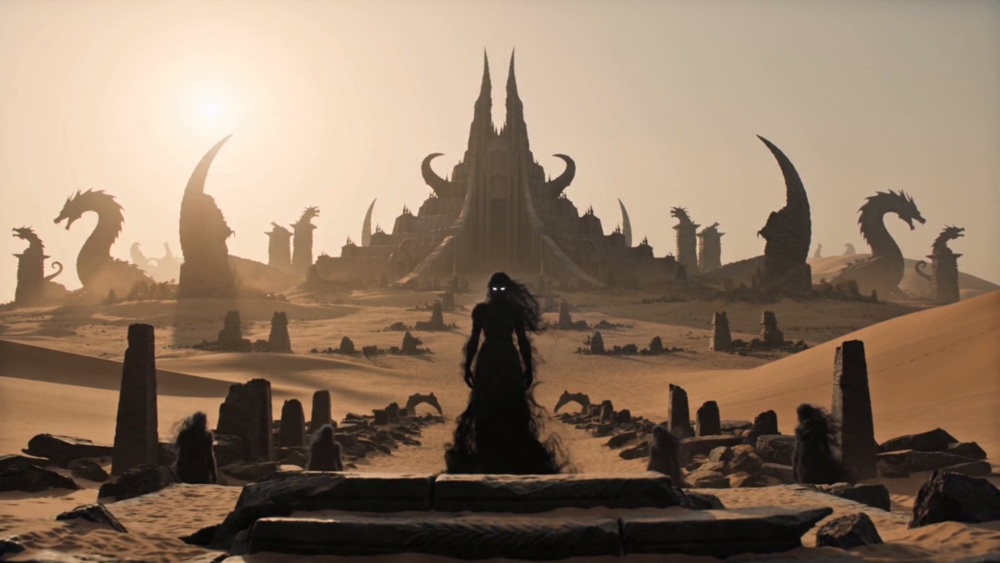
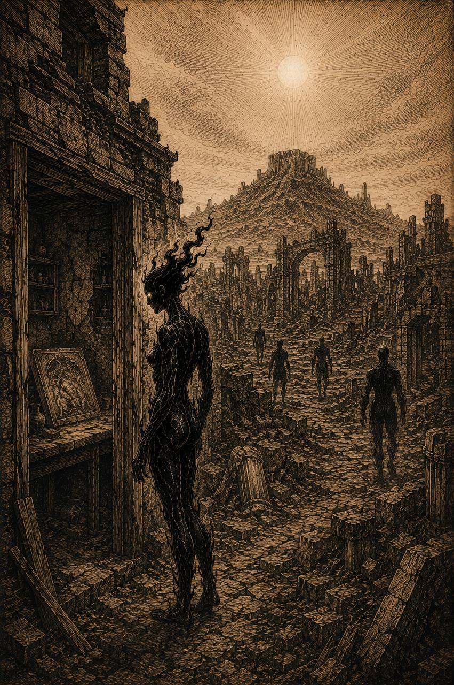
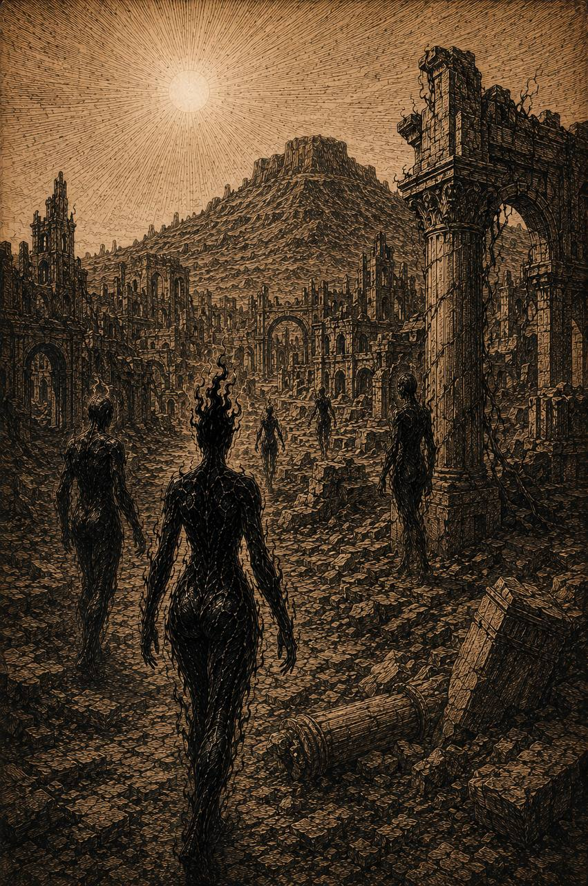
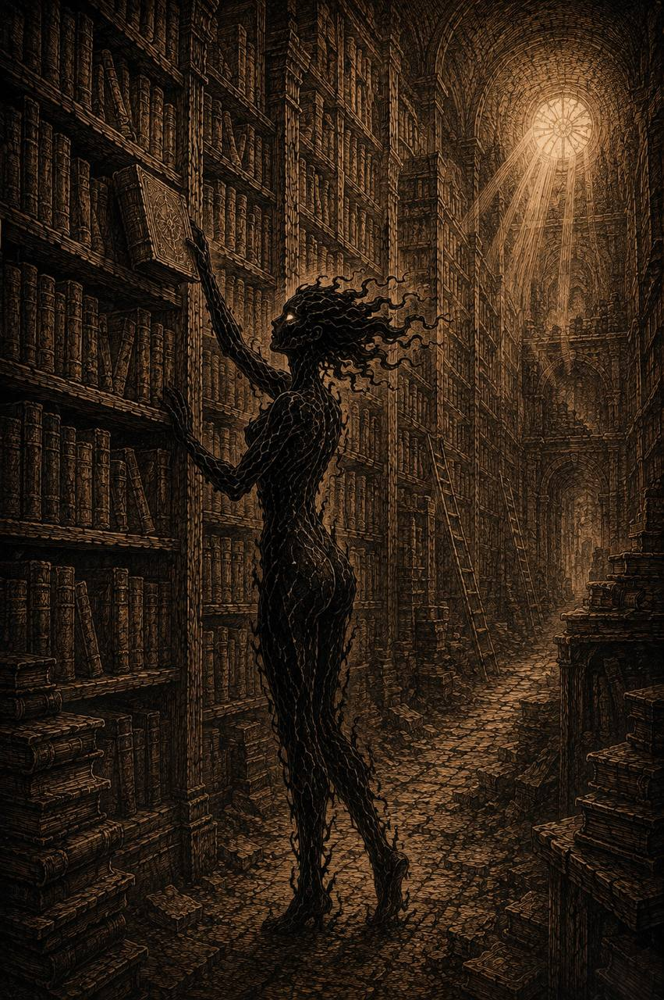

Локация / Мёртвые земли
Драконья
гора
Древний город эпохи драконов в Мёртвых землях.
У подножия горы сохранились руины города — следы времени, закончившегося задолго до событий Тома I.Архивная запись · Том I
Краткое досье
- Тип
- Гора и древний город у подножия
- Регион
- Мёртвые земли
- Состояние города
- Преимущественно разрушен
- Известный объект
- Древняя библиотека
- Историческое значение
- Одно из мест Великой драконьей войны
I / Руины
Город под горой
У подножия Драконьей горы лежат руины древнего города. К событиям Тома I большая часть поселения разрушена, но отдельные здания сохранились.
Среди них — древняя библиотека, один из наиболее значимых известных объектов города. Масштаб руин напоминает о существовавшем здесь поселении, происхождение которого остаётся неизвестным.

II / История
Наследие драконов
История Драконьей горы связана с эпохой драконов. Этот район стал одним из мест, затронутых Великой драконьей войной — войной людей с драконами.
Следы той эпохи сохранились в руинах города и в знаниях, которые веками хранились в библиотеке. Точная природа связи самой горы с наследием драконов не установлена.

III / Уцелевшее знание
Древняя библиотека
Среди руин города сохранилась древняя библиотека. На её полках веками накапливались знания о драконах: книги, записи и тексты давно ушедшей эпохи.
Часть материалов написана на древнем языке. Сохранность записей сама по себе не означает, что всё содержащееся в них сегодня можно прочесть и понять.
Знания пережили тех, кто их оставил.

IV / Память места
Место Великой войны
Драконья гора и окружающие земли стали свидетелями войны людей с драконами. От той эпохи здесь остались разрушенный город, уцелевшие здания и знания, хранящиеся в библиотеке.
Это один из заметных следов прошлого в Мёртвых землях — без необходимости превращать руины в рассказ о конкретных сражениях.
V / Местность
Условия
Драконья гора находится в суровой части Мёртвых земель. Днём открытая местность сильно нагревается под солнцем, а ночью становится очень холодно. Сама гора заметна издалека.
Большая часть территории остаётся бесплодной. Однако возле древней библиотеки однажды была зафиксирована редкая зелень на земле.
Причина явления не установлена.